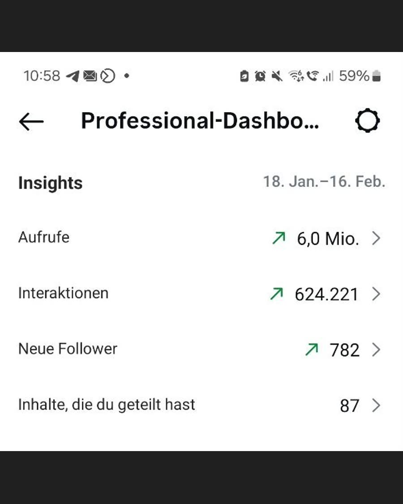
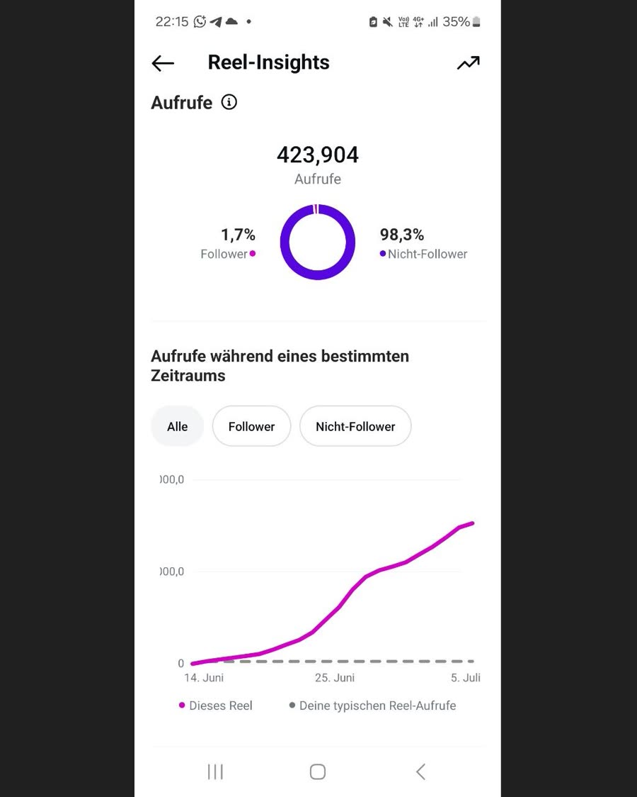

Für wen ich poste
Ich hab gelernt, mich festzulegen, für wen ich Content mache und worüber. Deshalb geht es auf meinem Profil nur um drei Themen: auf Instagram wachsen, verkaufen ohne eigenes Produkt und KI.
SCHÖN, DASS DU DA BIST
Auf Instagram zeig ich dir, wie du dort wächst, wie Verkaufen ohne eigenes Produkt geht und welche KI dir dabei Arbeit abnimmt. Gelernt hab ich das im SCB-System, und im kostenlosen Videotraining siehst du, wie es aufgebaut ist. Ich bin Papa von zwei Kids, hab einen ganz normalen Job und mach das nebenbei, meistens vom Handy aus.
KURZ ERKLÄRT
Das SCB-System ist ein Online-Programm, in dem du Schritt für Schritt lernst, auf Instagram Reichweite aufzubauen und daraus Umsatz zu machen.
Ich hab dort gelernt, was ich dir auf Instagram zeige. Inzwischen kümmere ich mich im Programm selbst um den Bereich KI.
Darum geht's
Wie das System aufgebaut ist, zeigt dir das kostenlose Videotraining.
Zum Videotraining ↓Was ich dir auf Instagram über Reichweite, Reels und Verkaufen zeige, hab ich mir nicht selbst ausgedacht. Ich hab es im SCB-System gelernt und geb es so weiter, dass es auch nebenbei klappt.
Das hab ich dort gelernt
Ich hab gelernt, mich festzulegen, für wen ich Content mache und worüber. Deshalb geht es auf meinem Profil nur um drei Themen: auf Instagram wachsen, verkaufen ohne eigenes Produkt und KI.
Ich hab gelernt, wie ein Reel vom ersten Satz bis zur Caption aufgebaut sein muss, damit Leute dranbleiben und kommentieren. Die Vorlagen dazu verschenk ich auf Instagram, wenn du ein Keyword kommentierst.
Ich hab gelernt, dass Aufrufe allein keine Rechnung bezahlen. Wichtiger ist, dass dir Leute schreiben, dir vertrauen und irgendwann über deinen Link etwas kaufen. Ein eigenes Produkt brauchte ich dafür nicht.
Das ist mein Teil. Im Programm kümmere ich mich inzwischen selbst um den Bereich KI, also darum, wie Bilder, Videos und Texte mit KI schneller entstehen. Das leg ich dir auf Instagram noch obendrauf.
VON INNEN ANGESCHAUT
ZUM MITNEHMEN
Damit du das beim nächsten Reel nicht im Kopf behalten musst, hab ich dir ein Reel-Drehbuch geschrieben. Es zeigt dir den Aufbau Sekunde für Sekunde an einem Beispiel, und am Ende baut dir ein Prompt dein eigenes Reel.
Daneben liegen noch mehr Anleitungen, zum Beispiel fünf Story-Vorlagen oder 25 Bild-Prompts zum Kopieren. Du kannst sie alle kostenlos als PDF öffnen.
Zu den Anleitungen →MEINE KI-TOOLS
MEIN WEG
Irgendwann ist mir aufgefallen, wie unwichtig mein Job ist, wenn ich um eine Gehaltserhöhung bitte. Und wie wichtig er plötzlich wird, wenn ich einen Tag frei haben will. Darüber konnte ich lange lachen, irgendwann aber nicht mehr.
Meine Zeit hat mir jemand anders eingeteilt, mein Gehalt hat jemand anders festgelegt, und für einen freien Tag hab ich einen Urlaubsantrag gestellt. Das hat mich lange nicht gestört. Bis dieser eine Gedanke kam und einfach nicht mehr wegging: „Das kann doch nicht alles sein.“
2021 hab ich nebenberuflich mit Produktvertrieb angefangen, also Network Marketing. Ständig auf Terminen, ständig am Promostand, und nie sicher, ob am Ende überhaupt Geld dabei rumkommt. Einmal bin ich eineinhalb Stunden zu einem Termin gefahren, stand vor einer verschlossenen Tür und bin für nichts wieder heim. Das hat mich damals übelst genervt.
Genau in dieser Zeit hat meine Tochter mich gefragt: „Papa, musst du wirklich auf diesen Termin?“ Dieser eine Satz hat mehr verändert als alles davor. Da war mir klar, dass es so nicht weitergeht. Wenn ich schon nebenbei was aufbaue, dann etwas, das mir keine Zeit mit meinen Kindern frisst.
Dann bin ich zufällig über Instagram auf das SCB-System gestoßen. Trotzdem hab ich über ein Jahr gebraucht, bis ich angefangen hab, weil ich nach dem Network Marketing keinem Screenshot mehr geglaubt hab. 2025 hat das Geld dann an allen Ecken gefehlt, und ich hab mich oft gefragt, wie ich meine Familie über die Runden bringen soll. Als ich meiner Frau gesagt hab, dass ich mit SCB anfangen will, hat sie nur gesagt: „Okay. Das ist jetzt wirklich das letzte Mal, und das ziehst du durch.“ Genau das hab ich gemacht.
Meinen ersten Verkauf hatte ich nach einem Monat. Wie erleichtert ich war, kann ich bis heute nicht richtig beschreiben. Mit dem Geld konnte ich endlich ein paar der Baustellen schließen, die unsere Geldsorgen aufgerissen hatten. Der Druck auf der Brust war weg, und sogar mein Augenzucken ist verschwunden.
Bei dem einen Verkauf ist es nicht geblieben. Ich mach das neben meinem Job weiter, von überall aus, und manchmal sitzen mein Sohn (5) und meine Tochter (8) dabei direkt neben mir. Dieses Jahr hab ich unseren Familienurlaub gebucht, ohne vorher zweimal zu rechnen, und wenn ich mir neue Schuhe kaufen will, schau ich vorher nicht mehr aufs Konto. Ob das bei dir genauso läuft, kann ich dir nicht versprechen. Zeigen, wie ich es mache, kann ich dir aber.
AUS MEINEM ACCOUNT
Das sind zwei Screenshots aus meinem Instagram-Account, entstanden neben Vollzeitjob und Familie. Ich zeig sie dir, obwohl ich selbst lange keinem Screenshot geglaubt hab. Und schau mal genau hin: Aus 6 Millionen Aufrufen wurden nur 782 neue Follower. Reichweite allein bringt dich nicht weit, genau das hab ich im Programm gelernt.


SO ARBEITE ICH
Ich bin kein Coach auf der Yacht, sondern ein Papa mit Job, der nebenbei Content macht. So sieht das bei mir aus.
Am Anfang sind mehr als genug meiner Reels gefloppt. Aufgehört hab ich trotzdem nicht, ich hab mir Hilfe geholt.
In den Live-Calls vom Team hab ich mir sagen lassen, was ich an meinen Reels besser machen kann. Das hab ich dann umgesetzt.
Mein erster Umsatz kam nach einem Monat, und zwar erst, nachdem ich die Tipps aus den Live-Calls umgesetzt hatte.
Circa eine Stunde am Tag. Vieles geht dank KI direkt vom Handy, und manchmal sitzen die Kids dabei neben mir.
BEVOR DU KLICKST
Die Fragen und das Videotraining sind kostenlos. Wenn du danach tiefer einsteigen willst, klärst du alles Weitere in einem persönlichen Gespräch mit dem Team, auch was das Programm kostet.
Wenn deine Antworten zeigen, dass es passen könnte, und du es möchtest, meldet sich jemand vom Team telefonisch bei dir und führt ein persönliches Gespräch mit dir.
Nein. Ich zeig meins, aber das System funktioniert auch ohne, zum Beispiel mit einer Themenseite, auf der es um ein Thema geht statt um dich.
Im Programm wird mit ein bis zwei Stunden am Tag gerechnet. Bei mir ist es circa eine Stunde.
Nein. Im Programm wird alles Schritt für Schritt erklärt, auch die Grundlagen zu Instagram.
MEHR VON MIR
Beim kostenlosen Live-Event siehst du, wie das System funktioniert, und kannst deine Fragen direkt stellen.
Kostenlos und live
*Werbung: Das Live-Event veranstaltet Secret Creators. Wenn du dich über meinen Link anmeldest und später etwas kaufst, bekomme ich eine Provision.
WENN DU MAGST
Letztes Jahr hab ich mich noch oft gefragt, wie ich meine Familie über die Runden bringen soll. Heute ist dieser Druck weg. Wenn du sehen willst, wo ich das alles gelernt hab, zeigt dir das Videotraining das System, mit dem ich arbeite.
Nach dem Klick kommen ein paar kurze Fragen und dann das Video. Wenn es für dich passt, kannst du dich danach für ein persönliches Gespräch entscheiden.
Zu den Fragen und zum Video* → Oder schau dir zuerst das Videotraining an* →*Werbung: Wenn du über meinen Link später etwas kaufst, bekomme ich eine Provision.
Lieber erst mal nur folgen?
@julians.wayOder schau dir erst mal meine Anleitungen an, die kannst du kostenlos öffnen.